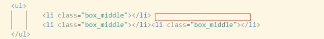
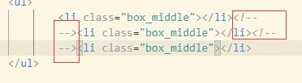

redDiv
redDiv:width:50px;height:50px;background-color:red;display:inline-block
vertical-align:baseline;默认。元素放置在父元素的基线
上
vertical-align:
sub;垂直对齐
sub文本的
下标
vertical-align:
super垂直对齐
sup文本的
上标
text-top属性实例：
css样式：
.ctn-block{display: block;background-color: #bbb;line-height: 200px;font-size: 50px; }
.ctn-block .child1{display: inline-block;width: 100px;height: 100px;margin:10px 0;vertical-align: baseline;background-color: aliceblue;}
vertical-align:
text-top元素的
顶端与父元素字体的
顶端(margin-top边界)对齐
vertical-align:
text-bottom元素的
底端与父元素字体的
底端(margin-bottom边界)对齐
vertical-align:
middle把此元素放置在父元素的
中部
vertical-align:
bottom把元素的顶端与
行中最低的元素的
顶端对齐
vertical-align:
top元素的顶端与行中
最高元素
的
顶端
对齐
红色元素：class=redDiv;height:100px
vertical-align:100 px;升高（正值）或降低（负值）子元素盒子。值为升高/降低的距离，如果为0，和vertical-align:baseline一样()
vertical-align:xxx %;同理
实用技巧
inline-block并排显示的元素下方与水平方向有空隙
有空隙的情况：
可以见到上分每个元素离下方有一点点空隙
样式:
ul{background-color: bisque;}
ul box_not_middle{display: inline-block;width: 100px;height: 100px;background-color: aliceblue;}
解决方法：
解决垂直空隙：将li的vertical-align设为middle
有水平空隙的原因如图：

因为li元素之间(红框标识处)进行了换行,浏览器把换行单独识别成一个空白节点,所以会出现空隙
解决方法是在li元素之间用注释分割换行
如图：

效果：